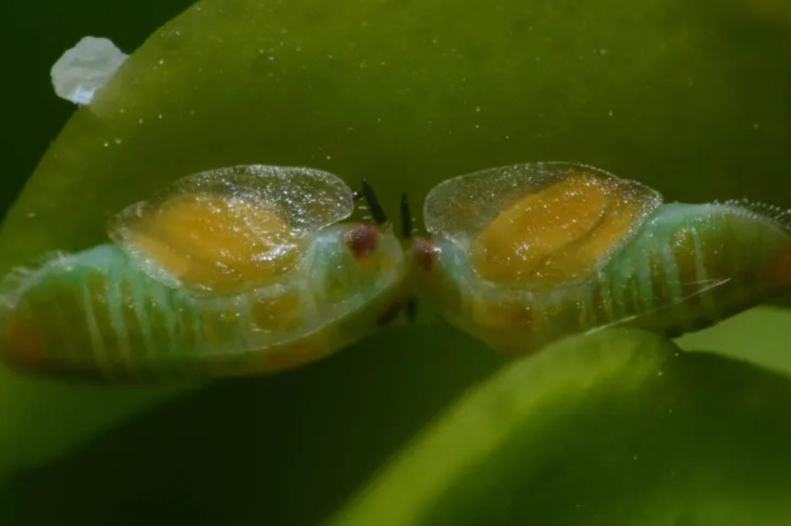
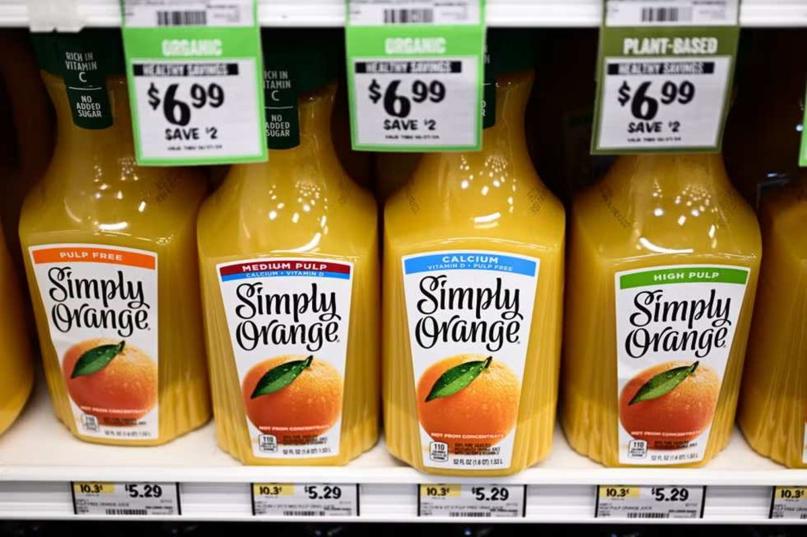

Costs of Orange Juice
Orange juice prices began rising dramatically in 2024 to the dismay of consumers and producers alike — after extreme weather and disease caused major supply-chain disruptions. Retail prices reached a record high in May 2026.
Extreme Weather
Hurricane Ian hit Florida in 2022, causing the state’s smallest orange harvest since World War 2, according to the USDA. In 2024, orange production in Brazil declined 30% compared to the previous season due to a mixture of both flooding and drought. Severe weather, along with citrus greening disease, left global orange juice supplies scarce, leading to raised prices.
Citrus Greening Disease
Citrus greening, also known as Huanglongbing, is a bacterial disease that causes citrus trees to bear small, green, bitter fruit. There is no known cure or treatment, and infected trees eventually die. Although the disease cannot harm humans, it has devastated the citrus industries in the United States and Brazil.
The disease is spread by the Asian citrus psyllid, an invasive insect that feeds on citrus and carries the disease-causing bacterium. Although the Asian citrus psyllid has been present in the United States since 1998, citrus greening was not detected in the United States until 2005. Some experts believe that the disease was introduced to Florida trees through grafting and was then spread by the Asian citrus psyllid.

After being discovered in Florida in 2005, citrus greening disease has reduced citrus production by 75%, according to the USDA.
The disease spread to Brazil, the world’s largest producer of oranges, around the same time. Citrus greening was first detected in Brazil in 2004. A 2026 survey by Fundecitrus indicates that 48.08% of orange trees in Brazil’s citrus belt are infected.
2026 Insights

Retail prices for orange juice reached a record high in May 2026 at $4.97 per 16 oz of juice. A 2024 study by the University of Florida found that the demand for orange juice has declined in response to higher prices. Researchers concluded that decreased demand had little to do with changing tastes, as many orange juice drinkers began buying orange juice less frequently but did not stop altogether.
Citrus greening continues to devastate orange groves in Brazil and the United States. According to Fundecitrus, this upcoming orange season, Brazil is expected to see a 10.2% decrease in production.
Researchers at the University of Florida are experimenting with a type of genetically modified citrus tree that produces a protein that can kill baby Asian citrus psyllids. The method has shown promise in lab and greenhouse tests, but still requires further testing in a natural environment.
Although there has been a slight decrease in retail orange juice prices since May, consumers can expect to continue paying high prices for now.